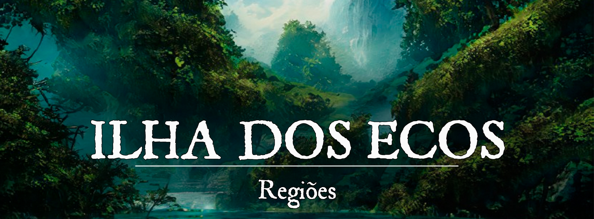

Ilha dos Ecos
Descrição
A Ilha dos Ecos é uma vasta selva cercada por altas montanhas, isolada do resto do mundo. O clima é quente e úmido, com chuvas frequentes. A vegetação é densa e exuberante, com árvores gigantes, arbustos e plantas rasteiras cobrindo toda a ilha. As florestas são habitadas por uma variedade de bestas e criaturas, incluindo animais silvestres comuns, e até mesmo outras monstruosidades, além de dinossauros enormes. Ecos de origem indeterminada sussurram na floresta, trazendo memórias de tempos antigos, e enganando desavisados. No centro da ilha existe um grande abismo, conhecido como o Abismo Amaldiçoado, que é evitado pelos habitantes da ilha devido à sua reputação e história destrutiva. Além disso, diversas ruínas antigas se escondem na floresta, milhares de anos foram perdidos e soterrados pelo tempo na Ilha dos Ecos.
A ilha é habitada por diversas tribos, cada uma com sua própria cultura e crenças. Essas tribos são lideradas por um Ul-Shakai, e constantemente tentam decidir qual delas é digna de governar às outras com um Ul-Shakai soberano. A maioria das tribos seguem a crença em vários deuses da natureza e dos elementos, buscando uma conexão com a natureza para entender como viver sem enfurecer o Abismo. As tribos também praticam o xamanismo, buscando a orientação e proteção de espíritos animais.
Recentemente, exploradores forasteiros construíram o Porto Inavis no sul da Ilha. Os exploradores se organizam para enviar expedições ao Abismo, em busca de relíquias ancestrais de valor inestimável, contudo têm encontrado resistência das Grandes Tribos, que acreditam que tal perturbação enfurecerá o Abismo trazendo outra catástrofe.
Geografia:
r70a3tn9sc961.png |Ilha dos Ecos
{kind=link}
A Ilha dos Ecos é uma grande ilha tropical, cercada por águas escuras e profundas. A floresta é densa e exuberante, com árvores altas e vegetação luxuriante cobrindo quase toda a superfície da ilha. Existem rios e cachoeiras que serpenteiam através da floresta, alimentando uma diversa vida selvagem. O relevo disforme torna a viagem pela floresta complicada, e quanto mais você se aproxima do centro da Ilha, mais alto fica, e então de forma abrupta o terreno deixa de ficar mais alto e se afunda até chegar em um grande abismo, com uma profundidade desconhecida, que é visto como um lugar maldito e evitado pelos habitantes da ilha. As ruínas antigas do Reino Avakalu ainda podem ser encontradas espalhadas pela ilha, algumas delas ainda habitadas pelas tribos que vivem na ilha. A Ilha dos Ecos é um lugar mágico e exótico, repleto de mistérios e criaturas.
viktor-colpaert-highresscreenshot00084.png |Ruínas Antigas
{kind=link}
Governo:
As Grandes Tribos da Ilha dos Ecos são lideradas, cada uma, por um Ul-Shakai, um líder escolhido entre os membros mais respeitados e experientes da tribo. Esses líderes são responsáveis pela tomada de decisões importantes para a tribo, bem como pela proteção e sobrevivência dos seus membros.
Embora as tribos tenham seus próprios líderes, elas também se reúnem de tempos em tempos para discutir questões de interesse comum, como possíveis alianças para se defenderem de perigos maiores. Nessas ocasiões, os líderes buscam discutir e chegar em um acordo, mas cada tribo permanece independente e tem o direito de tomar suas próprias decisões.
Existe uma certa tensão entre as tribos devido ao desejo de algumas de serem lideradas por um único Ul-Shakai, enquanto outras desejam manter sua independência. Isso gera conflitos de tempos em tempos, mas até o presente momento as Grandes Tribos não chegaram a um acordo para a criação de um conselho permanente, e nem possuem uma “cidade” principal.
Caráter:
O povo da Ilha dos Ecos é conhecido por ser muito reservado e desconfiado com estrangeiros. Eles têm uma forte ligação com suas tradições e crenças ancestrais e acreditam que essas tradições devem ser protegidas a todo custo. Devido às invasões demoníacas e à exploração do Abismo Amaldiçoado, eles desenvolveram uma mentalidade conservadora e temem qualquer tipo de mudança ou ameaça à sua cultura.
Apesar de serem reservados com os estrangeiros, os habitantes da Ilha dos Ecos são muito solidários entre si e ajudam uns aos outros quando preciso. Eles têm uma forte ligação com a natureza e vivem em harmonia com ela, e seus xamãs e druidas desempenham um papel importante na vida da comunidade. Eles também são conhecidos por serem muito corajosos e valentes, e não hesitam em lutar para proteger sua Ilha e sua gente.
População:
A população da Ilha dos Ecos é composta principalmente por humanos, aarakocras, lizardfolks, shifters, hadozees, tabaxis, tieflings, tortles e yuan-tis. Geralmente eles não são completamente misturados, e são mais vistos em grupos maiores de uma só raça, mas algumas das maiores tribos são um pouco mais diversas.
Cultura:
As tribos da Ilha dos Ecos possuem uma cultura rica e diversificada, com influências de vários povos e civilizações que surgiram na ilha ao longo dos séculos. A religião é uma parte importante da cultura das tribos, com muitas delas adorando deuses e divindades relacionadas à natureza e aos ancestrais, como Mahrvos, Hebbame, Scaldris, Helisiya, Graunt e Gwynt. Os xamãs e druidas são figuras respeitadas e possuem papéis importantes na liderança das tribos.
As artes são valorizadas nas tribos, com muitos artistas dedicando-se às artes plásticas, música e dança. A arte da tatuagem é especialmente popular, com muitos membros das tribos usando tatuagens como forma de honrar seus ancestrais e deuses.
Os residentes são extremamente protetores da ilha e sua história, e qualquer forma de exploração ou desrespeito às tradições é desencorajada, podendo inclusive intervir de forma violenta em caso de depredação ou saque. As tribos também têm uma forte relação com a natureza, com muitas delas vivendo em harmonia com a floresta e seus animais. A caça e a pesca são fontes importantes de alimento, e as plantas são usadas tanto para fins medicinais quanto para fins culinários.
Economia
A economia da Ilha dos Ecos é baseada na agricultura, caça e pesca. As tribos buscam a autosuficiência e, por isso, cada uma possui suas próprias plantações e animais para alimentação. Algumas tribos também possuem artesanato como uma forma de comércio entre si, como cerâmica, tecidos e jóias feitas com pedras e metais encontrados na Ilha. No entanto, devido à sua falta de ferramentas avançadas para manufatura, a economia é limitada e as tribos vivem em condições precárias. A exploração do Abismo Amaldiçoado é vista como uma forma de melhorar a economia, mas essa é uma questão polêmica entre as tribos, com algumas permitindo e outras se opondo a ela.
Poderio Militar
Cada tribo tem seus próprios guerreiros treinados, como xamãs e druidas, que possuem habilidades mágicas para se defender. Algumas tribos também possuem armas avançadas, como arcos e flechas, espadas e escudos, que são usadas na defesa da tribo. Além disso, as tribos possuem alianças entre si, o que permite uma defesa coletiva em caso de ameaças externas e também fazem uso de espólios tomados de invasores, como armaduras de placas, redes de metal e em alguns casos até mesmo itens mágicos. No entanto, devido a sua necessidade de serem auto-suficientes, as tribos não possuem um exército grande e organizado, como um império ou reino.
Conflito:
A Ilha dos Ecos é um lugar cheio de perigos. A selva é densa e perigosa, repleta de animais selvagens e criaturas atrozes. É fácil se perder na mata, e muitos viajantes não voltam depois de entrar nela. A própria flora pode ser mais perigosa do que a fauna, existem muitas plantas carnívoras e venenosas, tornando a selva muito difícil de ser navegada sem conhecimento prévio.
Nem todas as tribos estão em paz, e algumas são bem agressivas a forasteiros, é possível que acabem entrando em conflito de tempos em tempos.
O Abismo Amaldiçoado é uma das coisas mais perigosas da Ilha, quanto mais se desce, mais perigoso fica. Monstruosidades extremamente perigosas espreitam apenas aguardando o momento certo para atacar, e é possível encontrar os “Amaldiçoados”, as pragas mágicas que surgiram do fundo do abismo há milênios atrás. As ruínas encontradas nele podem guardar riquezas inestimáveis, mas também perigos na mesma escala.
História de Origem
Na Era das Trevas:
A Origem As lendas dizem que desde o início, a Ilha dos Ecos era um grandioso campo de batalha, onde gigantes, dragões, e até mesmo deuses travavam seus grandes conflitos, mas nunca se atreveram a tornar a ilha em um lar. Desde os primórdios, alguns acreditavam que esse lugar nunca deveria ser habitado, pois havia sido tocado pela fúria dos deuses de formas que nunca se manifestaram antes no plano material.
Uma enorme selva preenchia toda a Ilha, cercada por montanhas que a isolavam de qualquer contato externo, e em seu centro, um enorme abismo desafiava a vida de muitas criaturas que se aproximavam.
Uns dizem que o abismo foi criado pela fúria dos deuses na região, outros dizem que ele foi criado junto à terra, mas desconhecem as razões. Com o passar do tempo muito da história da Ilha dos Ecos foi apagada, diversas civilizações se ergueram e caíram mais do que se pode contar. Hoje em dia o povo tem a crença de que é a ilha que decide destruir essas civilizações, eles acreditam que a ilha tem uma vontade própria e que ela decide quem pode viver e quem deve morrer. Nas florestas existiram bestas e monstruosidades colossais, que eram uma ameaça para todo tipo de sociedade. O próprio império élfico que reinou por milhares de anos não foi capaz de criar nada significativo na Ilha, e hoje só restaram ruínas espalhadas.
O Reino Avakalu (por volta de 24.000 - 25.000) Apesar de tudo, sempre houveram povos que viveram na Ilha, e apesar de seus esforços de criar suas pequenas sociedades parecessem ter frutos no curto prazo, era apenas uma questão de tempo até que essas civilizações encontrassem suas ruínas, seja por conflito interno, ou desastres naturais. Mas mesmo assim, a Ilha dos Ecos nunca ficou completamente desabitada.
Em meio a todos os fracassos e constantes perdas de suas histórias e culturas, nasceu uma nova figura que acreditava ser capaz de dar a volta por cima. Seu nome foi perdido na história, mas seu título é conhecido até mesmo nos dias de hoje: Ul-Shakai. Ele aos poucos foi capaz de unificar os povos da selva, e criar um único reino que perdurou por mil anos, o Reino Avakalu. Apesar do fundador não ter tido uma vida muito longa, existiram muitos sucessores que herdaram sua imponência. Seu legado definitivamente existe ainda nos dias de hoje. O título de Ul-Shakai é utilizado desde aquele tempo para os líderes de tribos na Ilha.
Estudiosos acreditam que eles estavam muito à frente de seu tempo, sendo capazes de até ter tecnologias que eram capazes de igualar a magia do império élfico em alguns pontos de sua sociedade, mas hoje há poucas evidências que suportem essa lenda.
O Fim do Reino Avakalu e o Abismo Amaldiçoado (por volta de 25.000) Tudo corria bem, até que uma grande catástrofe ocorreu no mundo. A magia se descontrolou e muitos perderam suas almas ao tentar utilizá-la. O próprio Draíocht foi forçado a descer na terra para reescrever as leis da magia. E isso trouxe caos para todo lado até que tudo se normalizasse. Nesse período, algo estranho surgiu do Abismo, uma massa escura que tomou formas bestiais, humanóides e monstruosas que devastaram uma enorme parte de toda a civilização na Ilha, levando todo o Reino Avakalu à ruína. Após devastar o reino, essas criaturas retornaram para o fundo do abismo. Mais tarde essas “criaturas” passaram a ser consideradas uma praga nefasta.
A partir desse momento, os povoados da Ilha dos Ecos passaram a acreditar que o Abismo não é simplesmente o símbolo da fúria dos deuses, mas algo maldito e antigo, e então passaram a evitar o Abismo o máximo possível. Essas criaturas que surgiram ainda podiam ser avistadas nas partes mais profundas do abismo, e em casos raros, até mesmo nas partes mais superiores, e passaram a ser chamados de “Amaldiçoados”.
0a281b7777080ad1fa60d18b994d0ba2.png |Ruínas Antigas
{kind=link}
Muitas ruínas foram deixadas para trás no abismo, algumas não são visitadas há milênios. Mais uma vez, a ilha passa a ganhar mais ruínas, dessa vez as valiosas ruínas do Reino Avakalu, e então a civilização deve lentamente se reerguer. Após essa grande catástrofe, um fenômeno começou a ocorrer na floresta, ecos passaram a se manifestar pela floresta e pelas ruínas, às vezes sons estranhos e incompreensíveis, noutras era possível até mesmo ouvir as vozes de pessoas conversando sobre o dia-a-dia, mesmo que não houvesse uma alma viva no lugar. Esse fenômeno perdura até os dias de hoje, o que causa muito medo em forasteiros, que deram ao lugar o nome de Ilha dos Ecos.
zhu-liu-sdaasd11_1.jpg |Ruínas Antigas
{kind=link}
Uma Nova Crença (25.000 - 32.000) Muito tempo se passou após a catástrofe que dizimou o Reino Avakalu, e aos poucos mais tribos foram se formando, mas todas incapazes de sequer chegar perto do que o antigo reino havia alcançado. Sua tecnologia era muito inferior, e era muito mais difícil viver na selva com todas as suas monstruosidades e bestas. Essas pequenas sociedades muitas vezes se formavam a partir de ruínas antigas, para ter uma base de construção para que eles pudessem habitar, todos esses começaram a buscar meios alternativos para viver e compreender a natureza ao seu redor. A constante presença de “algo maior” que permeia cada aspecto da Ilha dos Ecos fez com que os povoados crescessem muito ligados às suas crenças. O próprio abismo havia se tornado uma entidade aos olhos dos povoados, uma entidade maligna que pode destruir tudo caso seja irritado. Por isso passou a ser um tabu sequer pisar um pé para dentro do abismo.
As civilizações em si mais uma vez não duraram, mas sua cultura aos poucos se moldou e não foi perdida com o tempo. Quanto mais tempo se passava, mais ritualista e apegado a sua fé o povo ficava. Eles buscavam uma conexão com a natureza para entender como eles podem viver sem enfurecer o abismo, e passaram a adorar diversos deuses diferentes. Entre eles principalmente Mahrvos, Hebbame, Scaldris, Helisiya, Graunt e Gwynt.
A busca dessa conexão com a natureza gerou frutos, muitos povoados começaram a adotar as práticas do xamanismo para fortalecer o que buscavam, e de pouco em pouco, tribos maiores foram surgindo. Tais tribos entraram em contato com espíritos de animais, e conseguiram suas bênçãos e proteções para suas terras. Além disso, surgiram alguns que eram capazes de começar a compreender um pouco da antiga tecnologia do Reino Avakalu, e tentavam começar a recriá-la, sem muito sucesso, mas seguindo o caminho certo.
Na Primeira Era: Não aconteceu muita coisa na Primeira Era até que chegassem os Dias de Tormenta, as Invasões demoníacas atraíram alguns problemas indesejados para a Ilha, e pela primeira vez, as civilizações que haviam lá não encontraram seu fim. As grandes tribos conseguiram sobreviver a esses problemas, e acreditaram que finalmente eles seriam capazes de quebrar o ciclo dessa Ilha. Então os xamãs, druidas e outros guerreiros pela primeira vez acreditaram que conseguiriam se estabelecer sem medo.
Na Segunda Era (Atual Era): As Grandes Tribos estavam finalmente conseguindo se estabelecer melhor, acreditando que haviam quebrado o ciclo. E ao mesmo tempo que todas elas desejavam se unificar, todas também desejavam ser lideradas por um único Ul-Shakai igual às histórias das lendas. No entanto, todas as tribos queriam que seus líderes se tornassem o único Ul-Shakai, e isso gerou atrito entre eles. Por não desejar a criação de um conselho, até hoje essas tribos acabam entrando em conflito de tempos em tempos, e tentando convencer umas às outras que uma deve liderar.
Há cerca de 20 anos uma enorme embarcação chegou na Ilha, com interesse em explorá-la. As lendas diziam que nem mesmo o antigo Império Élfico foi capaz de fazer dessa ilha um Lar, e alguns exploradores curiosos ouviram sobre histórias, e decidiram explorar essa Ilha. Era um grupo diverso, entre os exploradores haviam alguns estudiosos de Mystiria, investidores e exploradores de Fortuna e Ascalon, especialistas e guias Sankaros, e de mais alguns outros reinos. Foi construído um porto na entrada da Ilha para que esses exploradores pudessem ir e voltar, o porto cresceu e se tornou uma pequena cidade chamada Porto Inavis. Após terem uma perspectiva geral da Ilha, o maior interesse dos exploradores é o Abismo Amaldiçoado. Foi descoberto que existem relíquias mágicas ancestrais de valor inestimável em muitos lugares do Abismo.
Os residentes no entanto, são extremamente contra a exploração do Abismo, com medo de isso o enfurecer e trazer mais uma vez a destruição para a Ilha. Alguns até mesmo tentam pará-los com violência, então a situação também não é a mais agradável entres os exploradores e as Grandes Tribos. Então antes de realmente explorarem o Abismo direito, eles decidiram investir na diplomacia com as Tribos. Aos poucos, ganham um pouco mais de aceitação, e algumas tribos já permitem que eles explorem, mas sem a menor intenção de ajudá-los. Algumas das tribos ainda são contra, muito defensivas. Mas os progressos diplomáticos têm começado a ter efeito até mesmo nos mais reticentes líderes.